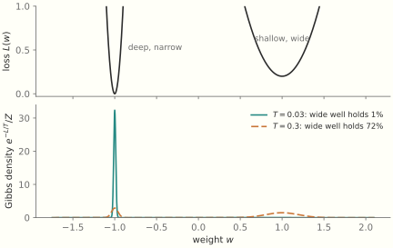
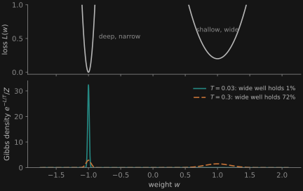
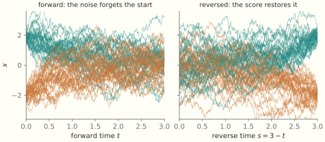
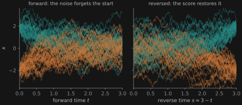

The Demon Is a Learner: The Mathematics
A continuation of The Standard of Motion: The Mathematics, numbered from §7: the overdamped limit, entropy and temperature from counting, Boltzmann’s H-theorem for a gas of balls and where its arrow of time comes from, the price of forgetting, algorithmic bounds, and ten tools of statistical mechanics at work in machine learning
This page continues The Standard of Motion: The Mathematics, which ends at §6. Section numbers and figure numbers run on from there. It accompanies The Demon Is a Learner. The Hamiltonian, the divergence of a flow, Liouville’s theorem and the stationary Gibbs state are all in §2 of the previous page, and this page starts from them. Sections 7, 10 and 11 write out the derivations the essay describes. Sections 8 and 9 build entropy and temperature from counting and derive Boltzmann’s H-theorem. Section 12 collects ten tools of statistical mechanics and shows each at work in machine learning.
Notation: entropies are in nats, with Boltzmann’s constant set to 1, so temperature T is an energy and a bit is \ln 2 nats. In §11 Kolmogorov complexities and Shannon entropies are in bits. \beta = 1/T. A learner’s loss L plays the role of energy. D(p\|q) = \sum_x p(x)\ln\frac{p(x)}{q(x)} is the Kullback–Leibler divergence. On this page “the essay” means The Demon Is a Learner.
The previous page’s account of closed systems, in §2, ends with a conservation law. A Hamiltonian flow has zero divergence, so a density carried by the flow keeps its Gibbs–Shannon entropy -\int\rho\ln\rho for all time. A learner’s weights concentrate and a gas relaxes, and both are built from matter that obeys this law. Most of what follows asks some form of one question: given Liouville’s theorem, how can entropy change, and who pays when it does?
7. The overdamped limit
Take Newton’s equation for a body of mass m under a force F(x) and linear drag \gamma, m\ddot x = F(x) - \gamma\dot x. Let \ell be a length scale and k a stiffness scale for the force, so that F = k\ell\,\varphi(X) with x = \ell X and \varphi of order one. Measure time in the slow unit \gamma/k, the time drag needs to move the body a distance \ell against forces of size k\ell: t = (\gamma/k)\tau. The equation becomes \varepsilon X'' + X' = \varphi(X),\qquad \varepsilon = \frac{mk}{\gamma^2}, with primes for d/d\tau. As a first-order system, X' = U,\qquad \varepsilon\,U' = \varphi(X) - U. For fixed X, the fast equation has the equilibrium U = \varphi(X), and its linearization has eigenvalue -1/\varepsilon < 0, so the equilibrium attracts. Tikhonov’s theorem (A. N. Tikhonov, “Systems of differential equations containing small parameters in the derivatives”, Mat. Sb. 31(73) (1952) 575–586) then gives: as \varepsilon\to 0, after an initial layer of duration O(\varepsilon), solutions converge on bounded time intervals to those of the reduced equation X' = \varphi(X), that is, \dot x = \frac{F(x)}{\gamma}. N. Fenichel’s geometric theory (“Geometric singular perturbation theory for ordinary differential equations”, J. Differential Equations 31 (1979) 53–98) adds that for small \varepsilon > 0 an invariant slow manifold U = \varphi(X) + O(\varepsilon) persists and attracts. The small parameter is the dimensionless mk/\gamma^2, not m/\gamma, which is a time.
The linear case. For \varphi(X) = -X (a spring), the characteristic equation is \varepsilon\lambda^2 + \lambda + 1 = 0, with roots \lambda_\pm = \frac{-1\pm\sqrt{1-4\varepsilon}}{2\varepsilon}. They are real, and the motion is overdamped, exactly when \varepsilon\le 1/4, i.e. \gamma^2\ge 4mk. The slow root is \lambda_+ = -1 - \varepsilon - 2\varepsilon^2 - O(\varepsilon^3), which tends to the reduced rate -1; the fast root is \lambda_- \approx -1/\varepsilon. At the threshold \varepsilon = 1/4 both roots equal -2, so the first-order law is off by a factor of 2 there and becomes accurate only well below it. In the units of the damped oscillator in §4 of the previous page (m = k = 1, friction \gamma), the threshold is \gamma = 2, where the focus becomes a node.
What the limit forgets. In phase space, with p = m\dot x, the system is \dot x = p/m, \dot p = F(x) - \gamma p/m. Its divergence is the constant -\gamma/m, so every region of phase space shrinks at the same rate, whatever the force. Nearly all of the shrinking happens along p. The small remainder, of order k/\gamma, is the slow contraction along x that §10.1 computes. A body that has been in the medium for a few times m/\gamma has lost the memory of its initial momentum, and one coordinate of phase space has gone. Aristotle’s law is what remains: a first-order equation on x alone, in which velocity is set by the force of the moment and carries nothing from the past. The swirl-and-slide decomposition of §2 shows the same thing from the side of the vector field: the overdamped limit is the regime where the slide dominates. §9.8 shows where the drag itself comes from.
8. Entropy, temperature and free energy
The essay uses temperature, entropy and free energy as if they were familiar. All three come from counting.
8.1 Entropy counts
Throw N distinguishable balls into boxes, and write n_i for the number in box i. The occupation numbers are the coarse description, the macrostate. The full list saying which ball is in which box is the microstate. Passing from the second to the first is coarse graining. The number of microstates with given occupations is the multinomial W = \frac{N!}{\prod_i n_i!}, and Stirling’s formula \ln n!\approx n\ln n - n gives, with p_i = n_i/N, \ln W \approx -N\sum_i p_i\ln p_i = N\,H(p). Boltzmann’s entropy of a macrostate is \ln W. Shannon’s entropy H(p) is the same quantity per ball. The agreement has a plain reading: to single out one microstate among W you need \ln W nats, so entropy is the length of the description you still lack once you know the macrostate. The count also says why typical microstates dominate. A macrostate with H lower by a fixed \delta has fewer microstates by a factor of e^{-N\delta}, and with N near 10^{23} no fluctuation reaches it. (This is the core of I. N. Sanov’s theorem on large deviations.)
Gibbs’s entropy -\int\rho\ln\rho has the same form with a different meaning. In the count above, p_i was the fraction of balls in box i, a fact about one actual microstate. Gibbs’s \rho is a probability distribution over all the possible microstates. Physicists picture it as an ensemble, a large collection of imagined copies of the system, and it records what we know of the system’s state.
8.2 Temperature is an exchange rate
Take a body’s energy E as its macrostate. Let W(E) be the number of microstates with that energy, so that the body’s entropy is S(E) = \ln W(E). Now let two bodies A and B share a fixed total energy E_{\text{tot}}, with E_A in the first and E_B = E_{\text{tot}} - E_A in the second. Any microstate of A can go with any microstate of B, so the counts multiply and the entropies add. Taking all joint microstates as equally likely, the likeliest split is the one with the largest count, which maximizes S_A(E_A) + S_B(E_{\text{tot}} - E_A). At the maximum, the derivative with respect to E_A vanishes. Energy given to A is taken from B, so the chain rule puts a minus sign on the second term: \frac{dS_A}{dE_A} - \frac{dS_B}{dE_B} = 0,\qquad\text{that is,}\qquad \frac{dS_A}{dE_A} = \frac{dS_B}{dE_B}. Two bodies in contact come to share this quantity, and we define temperature by it: \frac{1}{T} = \frac{\partial S}{\partial E}. So 1/T is the entropy a body gains per unit of energy received, and T is the energy that buys one nat. Cold bodies gain a great deal of entropy from a little energy. Hot bodies gain little. Energy moved from a hot body to a cold one raises the total entropy by dE\,(1/T_c - 1/T_h) > 0, which is why it flows that way. Heat Q delivered to a large bath at temperature T raises its entropy by Q/T. This is Clausius’s formula, and it is the only conversion the essay’s price list needs: to dump a nat into a bath you must hand over T of energy.
8.3 The Gibbs state
Let a small system in state x with energy E(x) sit in a large bath. The probability of x is proportional to the number of bath states compatible with it, and the bath’s entropy changes little: p(x)\ \propto\ e^{S_{\text{bath}}(E_{\text{tot}} - E(x))}\ \approx\ e^{S_{\text{bath}}(E_{\text{tot}})}\,e^{-E(x)/T}. Normalizing gives the Gibbs state, p_\beta(x) = \frac{e^{-\beta E(x)}}{Z},\qquad Z = \sum_x e^{-\beta E(x)}. The same formula comes out of a second derivation, which E. T. Jaynes made the foundation of the subject (“Information theory and statistical mechanics”, Phys. Rev. 106 (1957) 620–630). Maximize H(p) subject to a fixed mean energy. The Lagrange multiplier on the constraint is \beta. How Does a Policy Improve? reads multipliers as prices, and §8.2 agrees: \beta is the entropy price of energy. With a prior p_0 in place of the uniform measure, the same problem gives the tilt p\propto p_0\,e^{-\beta E}, which is the improved policy of that essay.
The state is stationary under Hamiltonian flow, as §2 of the previous page shows. Stationarity alone does not single it out, since any function of the Hamiltonian is stationary. What singles it out is the bath.
8.4 Free energy
Let a system at bath temperature T change its energy by \Delta E and its entropy by \Delta S, with no work done. The bath receives heat -\Delta E, so the total entropy changes by \Delta S_{\text{tot}} = \Delta S - \frac{\Delta E}{T} = -\frac{\Delta F}{T},\qquad F = E - TS. The second law for system and bath together becomes, for the system alone, the statement that F does not rise. So a system in a bath does not minimize its energy. It trades energy against entropy at the rate T, and minimizes E - TS. At low temperature energy wins, and at high temperature entropy wins. The name refers to work: the fall in F is the most work the system can deliver at temperature T (§10.3). For the Gibbs state, F = -T\ln Z.
9. The H-theorem for a gas of balls
Hamiltonian evolution keeps the fine-grained entropy, that of the density on the full phase space, constant, and yet a gas in a box relaxes. The seminar Piotr Biler ran around 2003 derived the second law from mechanics: an ideal gas of balls, Newton’s equations for their collisions, and a theorem that entropy does not decrease. The derivation is Ludwig Boltzmann’s H-theorem (“Weitere Studien über das Wärmegleichgewicht unter Gasmolekülen”, Sitzungsberichte Akad. Wiss. Wien 66 (1872) 275–370). Its interest lies in one line. Mechanics runs the same forward and backward, and the theorem does not, so the arrow of time has to come in somewhere. It comes in with the assumption that two balls about to collide are independent.
9.1 One collision
Take equal balls of diameter \sigma and unit mass in a uniform gas, so that the state of the gas is described by the density f(v, t) of velocities, normalized to 1, with \nu balls per unit volume. Two balls with velocities v, v_* meet with the unit vector n pointing from the center of the first to the center of the second. They exchange only the components of velocity along n: v' = v - \bigl((v - v_*)\cdot n\bigr)\,n,\qquad v_*' = v_* + \bigl((v - v_*)\cdot n\bigr)\,n. Momentum and energy are conserved: v' + v_*' = v + v_* and |v'|^2 + |v_*'|^2 = |v|^2 + |v_*|^2. Applying the same map again returns (v, v_*), so it is an involution. It is linear on the six-dimensional space of the pair’s velocities and it is a reflection there, so dv'\,dv_*' = dv\,dv_*. This is Liouville’s theorem for one collision. Everything about a single collision is reversible.
9.2 Counting collisions
How many collisions per unit time carry a ball out of velocity v? Fix the first ball. In time dt, a second ball with relative velocity v - v_* arrives from the direction n if it lies in a cylinder of base \sigma^2\,dn (in three dimensions) and height ((v - v_*)\cdot n)_+\,dt, where the subscript + keeps only approaching pairs. The expected number of such balls is \nu times the cylinder’s volume, weighted by the pair density at contact. Here the derivation needs something mechanics does not supply. The pair density f_2(v, v_*) at contact is a new unknown, and its own equation would involve triples, and so on up the hierarchy.
Boltzmann cut the hierarchy with an assumption about pairs that are about to collide: f_2(v, v_*) = f(v)\,f(v_*)\qquad\text{for incoming pairs, } (v - v_*)\cdot n > 0. Paul and Tatiana Ehrenfest later named it the Stosszahlansatz, the assumption about the number of collisions, in their encyclopedia article of 1911–12. Boltzmann’s own term, in his later Vorlesungen über Gastheorie, was molekular ungeordnet, molecularly disordered. With B = \nu\sigma^2((v - v_*)\cdot n)_+ and primes for the outgoing velocities, the loss from v and the gain into v from the reverse collisions give Boltzmann’s equation: \partial_t f(v) = \int\!\!\int \bigl[f(v')\,f(v_*') - f(v)\,f(v_*)\bigr]\,B\;dn\,dv_*. The gain term uses the same assumption, since the pair (v', v_*') is the incoming pair of the reverse collision.
9.3 The theorem
Let H = \int f\ln f\,dv, so that the entropy of one ball is S = -H. (Boltzmann’s H has the opposite sign to Shannon’s.) Write f_* = f(v_*), f' = f(v'), f_*' = f(v_*'), and likewise for other functions. For any function \varphi of velocity, consider \frac{d}{dt}\int\varphi f\,dv = \int\!\!\int\!\!\int \varphi(v)\;\bigl[f'f_*' - ff_*\bigr]\,B\;dn\,dv_*\,dv. The integral keeps its value under two relabelings, each with unit Jacobian and each leaving B unchanged: swapping the balls, (v, v_*, n)\to(v_*, v, -n), and exchanging a collision with its reverse, (v, v_*, n)\to(v', v_*', -n). The first replaces \varphi by \varphi_*. The second replaces it by \varphi' and flips the sign of the bracket. Averaging the four forms replaces \varphi by \frac14(\varphi + \varphi_* - \varphi' - \varphi_*'). With \varphi = 1 the integrand vanishes, so the total is conserved. With \varphi = \ln f + 1, \frac{dH}{dt} = -\frac14\int\!\!\int\!\!\int \bigl(f'f_*' - ff_*\bigr)\ln\frac{f'f_*'}{ff_*}\;B\;dn\,dv_*\,dv\ \le\ 0, because (a - b)\ln(a/b)\ge 0 for positive a, b. Equality holds only if ff_* = f'f_*' for every collision, which says that \ln f adds up to the same total before and after any collision. Mass, momentum and energy have that property, and a classical result says that they are the only such quantities, so \ln f is a combination of them: f(v) \propto e^{-|v - u|^2/2T}, the Maxwell distribution. It is the Gibbs state of §8.3 for a free particle, reached here from mechanics and one assumption, with no external bath.
9.4 Where the arrow came from
The proof used two symmetries of a collision, the swap and the reverse collision, and both hold in either direction of time. The third ingredient is the ansatz, and it does not. Suppose instead that pairs are independent after collision: f_2 = ff_* on outgoing pairs. Follow the count through §9.2. Each incoming pair at (v, v_*) continues as the outgoing pair (v', v_*') with the same density, so the loss term becomes f'f_*' and the gain term ff_*. The right side of Boltzmann’s equation changes sign, and H rises. The theorem has a mirror image, equally rigorous, in which entropy falls.
Both assumptions can hold at once only in equilibrium, where the collision term vanishes. Mechanics does not choose between them, and that left Boltzmann’s proof open to two objections. Josef Loschmidt pointed out in 1876 that reversing every velocity turns an entropy-raising history into an entropy-lowering one, so no theorem about mechanics alone can make entropy rise. Ernst Zermelo applied Poincaré’s recurrence theorem in 1896 (Ann. Phys. 57, 485–494): a bounded gas returns arbitrarily close to its start, so H cannot fall forever. In the debate in Nature in 1894–95, Samuel Burbury had already argued that the proof rests on a statistical assumption about collisions, his “Condition A”, which mechanics does not supply.
Figure 2 stages Loschmidt’s objection in a simulation. Two thousand hard disks in a box bounce under exact event-driven mechanics, starting with equal speeds and random directions. A second run imposes the ansatz directly: it picks pairs at random, so a pair’s history plays no part. The two entropy curves lie on top of each other, which is the H-theorem working. Then every velocity in the mechanical run is reversed. The gas now holds correlations that the ansatz says it does not have, because its incoming pairs are the outgoing pairs of the forward run. Its entropy falls back to the start. The figure’s third curve shows the catch. Rounding every velocity to six decimal places is a tiny error, and at first it changes nothing. But each collision per disk multiplies a typical error by about a hundred. After two and a half collisions per disk, the velocities of a tenth of the disks are wrong by more than a tenth of their speed, and soon the fall stops.
![Figure 2. Entropy of the distribution of energies among 2,000 hard disks with specular walls, area fraction 3%. All disks start at the same speed, so they begin in a single bin of the histogram, and the starting value is set by the bin width. The solid curve is the mechanical gas, run forward for 4 collisions per disk and then with all velocities reversed. The dashed curve imposes independence before collision by picking colliding pairs at random, and it rises to the Maxwell value and stays there. The dotted curve reverses the gas from velocities rounded to 6 decimal places, and it fails partway. The solid reversal is itself imperfect, because the arithmetic has about 16 digits: at the end the median disk has its speed back to within 3×10⁻⁸, and 1.5% of the disks are off by more than 10⁻³.](images/demon-hard-disks-reversal.svg)
![Figure 2. Entropy of the distribution of energies among 2,000 hard disks with specular walls, area fraction 3%. All disks start at the same speed, so they begin in a single bin of the histogram, and the starting value is set by the bin width. The solid curve is the mechanical gas, run forward for 4 collisions per disk and then with all velocities reversed. The dashed curve imposes independence before collision by picking colliding pairs at random, and it rises to the Maxwell value and stays there. The dotted curve reverses the gas from velocities rounded to 6 decimal places, and it fails partway. The solid reversal is itself imperfect, because the arithmetic has about 16 digits: at the end the median disk has its speed back to within 3×10⁻⁸, and 1.5% of the disks are off by more than 10⁻³.](images/demon-hard-disks-reversal-dark.svg)
The asymmetry can be measured on the pairs themselves while the gas relaxes. Take the first quarter of the forward run, when most disks still have nearly their starting energy, and correlate the energies of the two disks in each colliding pair. Before collision the correlation is small, about -0.03. After collision it is about -0.66, because two disks sharing a nearly fixed sum of energy split it between them. The random-pair run gives the same picture. In both, the small value before collision comes from fast pairs colliding more often. In the last quarter of the reversed run the numbers swap: -0.66 before collision, -0.03 after. The reversed gas is the gas for which the mirror theorem holds. The measure works only away from equilibrium. A collision preserves ff_*B, so in a Maxwell gas outgoing pairs look like incoming ones, and both correlations sit near -0.10.
So the arrow lies in the initial conditions. A gas prepared by ordinary means has no correlations tuned to its future, so it satisfies the ansatz, and it goes on satisfying it for times far shorter than a recurrence. An uncorrelated state is not itself directed: extended backward, entropy would rise from it into the past too. The direction comes from placing the special state at the beginning, which is what preparing a gas does, and which cosmology must explain for the universe as a whole.
9.5 The entropy that rises is a marginal
The fine-grained entropy S_N of all N balls is constant, by Liouville’s theorem. The H of the theorem belongs to the one-ball marginal. The two are related by an exact identity. Let the gas start uncorrelated, so that S_N(0) = N\,S(0), and define the total correlation C(t) = N\,S(t) - S_N(t) \ge 0, the divergence of the joint distribution from the product of its marginals. Since S_N does not change, N\bigl(S(t) - S(0)\bigr) = C(t). Every nat gained, summed over the balls, is a nat stored in correlations among them. E. T. Jaynes made this reading of the H-theorem central in “Gibbs vs Boltzmann entropies” (Am. J. Phys. 33 (1965) 391–398). Nothing has been lost from the gas. The information has moved to a place the one-ball description cannot see. Figure 2 follows a single gas, not an ensemble, and the same reading applies to it. Its histogram is a macrostate in the sense of §8.1. The entropy of that macrostate rises, while the microstate moves on with nothing lost. For an isotropic gas of disks dv = dE\,d\theta, so the entropy of the energies is the entropy of the velocities minus \ln 2\pi, and the theorem holds in two dimensions with \sigma\,dn in place of \sigma^2\,dn.
The ansatz now reads as an act of forgetting. It says that each incoming pair carries none of the correlation that earlier collisions made. Entropy rises in the H-theorem because a bounded description keeps f and discards the rest. Ebtekar and Hutter’s bound (§11), as the essay reads it, makes the same point in modern form. Figure 2 shows what the discarded correlations are worth. A demon that kept every position exactly and every velocity to six decimal places could run the gas back for about two and a half collisions per disk, which recovers a seventh of the entropy.
9.6 When independence is true
The ansatz is an assumption, but it can be earned. Two balls about to collide in a dilute gas have almost certainly never met, and the balls each has met have spread their influence to others. O. E. Lanford proved it in the Boltzmann–Grad limit, N\to\infty with N\sigma^2 fixed in three dimensions: for an initial state without correlations, the one-ball density converges to the solution of Boltzmann’s equation, for a short time of the order of a fraction of the mean free time (“Time evolution of large classical systems”, Lecture Notes in Physics 38 (1975) 1–111). The reversal is no contradiction. The theorem assumes an initial state without correlations, and the reversed gas is not one: its correlations are too fine to show in the one-ball density, and they matter anyway. The limitation on time lasted fifty years. Y. Deng, Z. Hani and X. Ma extended the derivation, for hard spheres in \mathbb R^d, to any time up to the lifespan of the solution of Boltzmann’s equation (arXiv:2408.07818, to appear in Ann. of Math.), and then, on tori, carried it on to the fluid equations (arXiv:2503.01800).
Mark Kac found a toy that shows the whole logic in a few lines (“Some remarks on the use of probability in classical statistical mechanics”, Bull. Acad. Roy. Belg. 42 (1956) 356–361). Put N balls on a ring, black or white, and mark a fixed subset of the N edges, a fraction \phi of them. At each tick every ball moves one site clockwise, and changes color if it crosses a marked edge. The rule is deterministic and reversible, and after at most 2N ticks, when every ball has crossed every marker twice, the ring is back where it started. The Stosszahlansatz here says that a ball’s color is independent of whether a marker lies ahead of it. Then the imbalance between white and black shrinks by a factor of 1 - 2\phi at each tick, and it decays exponentially to zero. For a random marking this is right for times much shorter than N, and it fails entirely at t = N, where the imbalance comes back whole, with its sign flipped if the number of markers is odd.
9.7 An H-theorem for any Markov chain
Let \mu and \pi be two distributions and P a Markov kernel, and write \mu P for the distribution after one step. Then D(\mu P\,\|\,\pi P)\ \le\ D(\mu\,\|\,\pi). The proof is the chain rule. For the joint law of a state and its successor, the divergence equals D(\mu\|\pi), because both joint laws use the same kernel. It also equals D(\mu P\|\pi P) plus a nonnegative term for the backward conditionals. If \pi is stationary, the divergence from \mu_t to \pi never rises, with no further condition on the chain, and it falls strictly once the chain mixes. See T. M. Cover, “Which processes satisfy the second law?”, in Physical Origins of Time Asymmetry (1994). Entropy itself is guaranteed to rise only when \pi is uniform. In general the quantity that cannot rise is the divergence, which for a Gibbs \pi is the free energy of §8.4 divided by T, up to a constant.
Boltzmann’s equation is not itself of this form, since the kernel for one ball depends on f. The form applies one level up: the random-pair run of Figure 2 is a fixed kernel on the states of all N balls.
Where did the arrow come in this time? Not in the word Markov, since a Markov chain read backward is again Markov. It came in with a kernel chosen without reference to \mu_t that leaves \pi alone. The backward kernels of the same chain depend on \mu_t, as §12.10 shows in detail. A kernel of the first kind says that the randomness applied at step t knows nothing of the distribution it acts on. That is the Stosszahlansatz for a bath: the molecule arriving at the system has not met it before. §9.8 shows where such a kernel comes from: a bath whose initial state was set before the system arrived, so this arrow is the arrow of §9.4 again. The theorem then gives the arrow of every Langevin simulation, every sampler and every noisy learner on this page. For stochastic gradient descent the assumption is that each minibatch is drawn fresh, whatever the current weights. Sweeping through a shuffled dataset epoch by epoch breaks it a little, since each batch then depends on the ones before.
9.8 Friction from a Hamiltonian bath
Dropping variables from a Hamiltonian system produces friction, noise and memory. An explicit model shows all three (G. W. Ford, M. Kac and P. Mazur, “Statistical mechanics of assemblies of coupled oscillators”, J. Math. Phys. 6 (1965) 504–515, for a wholly harmonic system; R. Zwanzig, J. Stat. Phys. 9 (1973) 215–220, for a particle in any potential). Couple a particle to many harmonic oscillators, with positions q_j, momenta p_j, masses m_j and frequencies \omega_j: H = \frac{p^2}{2m} + V(x) + \sum_j\Bigl[\frac{p_j^2}{2m_j} + \frac{m_j\omega_j^2}{2}\Bigl(q_j - \frac{c_j\,x}{m_j\omega_j^2}\Bigr)^2\Bigr]. The whole system is closed and Hamiltonian, so Liouville’s theorem holds for it. Each bath oscillator obeys a linear equation driven by the path x(t), so it can be solved exactly. Substituting the solutions into the particle’s equation, and integrating once by parts, removes the bath and leaves an equation for the particle alone: m\ddot x(t) = -V'(x(t)) - \int_0^t\Gamma(t - s)\,\dot x(s)\,ds + \xi(t),\qquad \Gamma(t) = \sum_j\frac{c_j^2}{m_j\omega_j^2}\cos\omega_jt. So far nothing is approximate. The term with \Gamma is friction with memory: the force at time t depends on the whole past path. The remaining term depends only on the bath’s initial state, through the shifted positions Q_j = q_j(0) - c_jx(0)/m_j\omega_j^2: \xi(t) = \sum_jc_j\Bigl[Q_j\cos\omega_jt + \frac{p_j(0)}{m_j\omega_j}\sin\omega_jt\Bigr]. Up to here \xi is a fixed function of the initial conditions. It becomes noise when we stop tracking them. Let the bath start in its Gibbs state given x(0), so that the Q_j and p_j(0) are independent Gaussians with variances T/m_j\omega_j^2 and m_jT. Then \langle\xi(t)\,\xi(s)\rangle = T\,\Gamma(t - s). The noise and the friction have the same kernel, because they come from the same oscillators. This is the fluctuation–dissipation relation, derived and not assumed.
The memory goes away in the limit of a continuous bath. Choose the couplings so that the density of c_j^2/m_j\omega_j^2 over frequency is a constant 2\gamma/\pi, up to a high cutoff. Then \Gamma(t)\to 2\gamma\,\delta(t), because the cosines add up at t = 0 and dephase at once everywhere else. The friction integral ends at s = t, so it takes half of the delta function’s weight and gives \gamma\dot x. The noise correlation has t - s in the interior and takes all of it. The equation becomes m\ddot x = -V'(x) - \gamma\dot x + \xi,\qquad \langle\xi(t)\,\xi(s)\rangle = 2\gamma T\,\delta(t - s), Langevin’s equation, whose overdamped limit (§7) is the dynamics of §10.2.
The arrow came in where §9.4 and §9.7 say it should. The bath started uncorrelated with the particle’s motion, and it has too many frequencies for anything to come back. The particle’s lost momentum sits in the phases of the oscillators, as the entropy of §9.5 sits in correlations. With a finite bath it can return. For N evenly spaced frequencies a distance \Delta apart, the cosines realign at t = 2\pi/\Delta. In a simulation of a free particle with 4,000 oscillators, the velocity falls as e^{-\gamma t/m}, to within 2% down to 2% of its initial speed, and the mean squared velocity approaches T/m. The kernel repeats its spike at the recurrence time, and a particle that had come to rest is kicked back up, to 2/e\approx 74\% of its initial speed a time m/\gamma later. That is Zermelo’s objection, in a bath.
The general statement is the projection formalism of R. Zwanzig (J. Chem. Phys. 33 (1960) 1338–1341) and H. Mori (Prog. Theor. Phys. 33 (1965) 423–455). Project any Hamiltonian system onto chosen variables, and the exact equation for those variables has three terms: a reversible drift, a friction with memory, and a noise built from what was projected out. A coarse graining is what turns Newton into Aristotle.
10. What forgetting costs
10.1 Volume contraction
Let a density \rho on \mathbb R^n be carried by a flow \dot x = v(x), so that \partial_t\rho + \nabla\cdot(\rho v) = 0. Its Gibbs entropy S = -\int\rho\ln\rho changes at the rate \frac{dS}{dt} = \int(\ln\rho + 1)\,\nabla\cdot(\rho v) = -\int\rho\, v\cdot\nabla\ln\rho = -\int v\cdot\nabla\rho = \int\rho\,\nabla\cdot v = \mathbb E_\rho[\nabla\cdot v], integrating by parts twice with vanishing boundary terms. For a Hamiltonian flow \nabla\cdot v = 0, and S is constant: this is the entropy form of Liouville’s theorem. For a gradient flow v = -\nabla L, \frac{dS}{dt} = -\,\mathbb E_\rho\bigl[\operatorname{tr}\nabla^2 L\bigr], which is negative while \rho sits where the loss curves upward on balance, as near a nondegenerate minimum. The flow concentrates the density, and the entropy falls. Run for long enough, it falls without limit, since a deterministic gradient flow sends a whole basin to one point.
10.2 With thermal noise
Couple the body to a bath at temperature T, the bath of §9.8 in its memoryless limit (overdamped Langevin dynamics with mobility 1/\gamma and isotropic noise): dx = -\gamma^{-1}\nabla L\,dt + \sqrt{2T/\gamma}\,dW. The density obeys the Fokker–Planck equation \partial_t\rho = -\nabla\cdot J with probability current J = -\frac{1}{\gamma}\bigl(\rho\nabla L + T\nabla\rho\bigr).
The Einstein relation. The noise strength here is not free, as §9.8 found from the oscillators. The density equation shows it again. Write the diffusion coefficient as \kappa, so that the noise is \sqrt{2\kappa}\,dW and the second term of J is -\kappa\nabla\rho. The current vanishes on the Gibbs state \rho\propto e^{-L/T} only if \kappa = T/\gamma, as substituting shows. So friction and noise are two faces of one bath: the medium that resists a body’s motion also shakes it, and temperature sets the ratio. Albert Einstein and William Sutherland found the relation independently in 1905. It is the first fluctuation–dissipation relation (§12.5).
The entropy balance. The system’s entropy changes at the rate \dot S_{\text{sys}} = -\int J\cdot\nabla\ln\rho. The force -\nabla L does work that the drag passes to the bath, so heat flows into the bath at the rate \dot Q = -\int\nabla L\cdot J (with L time-independent, \dot Q = -\tfrac{d}{dt}\mathbb E_\rho[L]). Adding the two, \dot S_{\text{sys}} + \frac{\dot Q}{T} = -\int J\cdot\frac{\rho\nabla L + T\nabla\rho}{T\rho} = \int\frac{\gamma\,|J|^2}{T\rho}\ \ge\ 0. The left side is the total entropy production, of system and bath together (U. Seifert, “Stochastic thermodynamics, fluctuation theorems and molecular machines”, Rep. Prog. Phys. 75 (2012) 126001). Integrated over a process, \Delta S_{\text{sys}} + Q/T\ge 0: if the system’s entropy falls by \Delta nats, at least T\Delta of heat goes to the bath. One bit is \ln 2 nats, so a process that removes one bit of uncertainty from the system releases at least T\ln 2. This is Landauer’s bound inside the model. Goldt and Seifert’s bound on learning, discussed in The Demon Is a Learner, is built on this balance, with the weights as the system.
With anisotropic, position-dependent noise, as in SGD, the diffusion term becomes \partial_i\partial_j(\kappa_{ij}\rho) with a matrix \kappa(x), the stationary state generally carries a nonzero current, and entropy production continues at stationarity. This is the nonequilibrium steady state that Chaudhari and Soatto describe.
The H-theorem again. Let \pi\propto e^{-L/T} be the Gibbs state. The current can be written J = -(T/\gamma)\,\rho\,\nabla\ln(\rho/\pi), so \frac{d}{dt}D(\rho_t\|\pi) = \int\partial_t\rho\,\ln\frac{\rho}{\pi} = -\frac{T}{\gamma}\int\rho\,\Bigl|\nabla\ln\frac{\rho}{\pi}\Bigr|^2 = -\frac{T}{\gamma}\,I(\rho_t\|\pi), where I is the relative Fisher information. Comparing with the balance above, the total entropy production is exactly the fall in D(\rho\|\pi). Relaxation at fixed L thus produces, in total, D(\rho_0\|\pi) nats.
How fast? If \pi satisfies a log-Sobolev inequality I(\rho\|\pi)\ge 2\alpha\,D(\rho\|\pi), the divergence decays as e^{-2\alpha Tt/\gamma}. If \nabla^2L\ge\lambda then \alpha = \lambda/T (D. Bakry and M. Émery, Séminaire de Probabilités XIX (1985) 177–206) and the rate is 2\lambda/\gamma, whatever the temperature. For a double well \alpha is exponentially small in the barrier over T, which is the barrier crossing of §12.6. The log-Sobolev condition is the Polyak–Łojasiewicz condition of the essay, one level up. There, the squared gradient of L bounds the height of L above its minimum. Here, T^2I is the squared gradient of the free energy in the Wasserstein geometry of Jordan, Kinderlehrer and Otto, and it bounds the height of the free energy above its minimum (F. Otto and C. Villani, J. Funct. Anal. 173 (2000) 361–400; for the sampling algorithm, S. Vempala and A. Wibisono, arXiv:1903.08568).
10.3 Information as work
Extend free energy to any distribution \rho on the states of a system with energy E in a bath at T: F[\rho] = \mathbb E_\rho[E] - T\,S[\rho]. Substituting \ln\pi = -\beta E - \ln Z gives, for the Gibbs state \pi, F[\rho] = F_{\text{eq}} + T\,D(\rho\|\pi). So a system out of equilibrium holds free energy above equilibrium in the amount T\,D(\rho\|\pi), and a reversible process can extract all of it as work (M. Esposito and C. Van den Broeck, “Second law and Landauer principle far from equilibrium”, EPL 95 (2011) 40004). Divergence from equilibrium is available work, with T as the exchange rate. Szilard’s engine and Landauer’s erasure are special cases, and Carnot’s bound, Still’s cycle and Kelly’s gambler run on the same exchange.
Szilard’s engine. One molecule in a box of two equal halves. Equilibrium \pi is uniform on the box. A measurement puts the molecule in the left half, so \rho is uniform on that half and D(\rho\|\pi) = \ln 2. The molecule can push a piston isothermally through the whole box and deliver T\ln 2 of work. With noisy measurements, the bound over a cycle is T times the mutual information between measurement and system (T. Sagawa and M. Ueda, Phys. Rev. Lett. 100 (2008) 080403).
Landauer’s erasure. Run the engine backward. A memory bit, unknown, is a system with \rho spread evenly over two wells, in equilibrium. Resetting it means reaching a state concentrated in one well, for which D(\rho\|\pi) is higher by \ln 2. Reaching it takes work of at least T\ln 2. Since the mean energy of the bit is unchanged, the work leaves as heat. At room temperature (T\approx 300\,K), T\ln 2 is 2.9\times 10^{-21} joules.
Carnot’s bound. An engine takes heat Q_h from a bath at T_h, delivers work W, and dumps Q_c into a bath at T_c, returning to its starting state. The total entropy must not fall, so Q_c/T_c\ge Q_h/T_h. With W = Q_h - Q_c, \frac{W}{Q_h}\le 1 - \frac{T_c}{T_h}. Sadi Carnot’s limit is the exchange rate of §8.2 applied twice. A nat of entropy drawn from the hot bath brings T_h of energy with it, and dumping that nat into the cold bath costs only T_c. The difference is the only profit available.
Still’s cycle. Susanne Still joined Szilard’s engine, the cost of memory and Carnot’s bound in one engine (“Thermodynamic cost and benefit of memory”, Phys. Rev. Lett. 124 (2020) 050601). It is a Szilard engine whose observer sees only part of the system and which may use two temperatures. Let X be the data the observer can see and Y the variable that work extraction can exploit. The memory M holds I_{\text{mem}} = I[M, X] about the data, and of that only I_{\text{rel}} = I[M, Y] is relevant. The remainder I_{\text{irrel}} = I_{\text{mem}} - I_{\text{rel}}\ge 0 is what the memory keeps and cannot use. The cycle has four steps:
- Write the memory at temperature T. The memory’s marginal distribution stays the same and it is never reset, so writing overwrites old contents. The joint entropy of memory and system falls by I_{\text{mem}}, and at least T\,I_{\text{mem}} of heat is dissipated. Bennett’s account puts the same cost at erasure, and only the sum of measurement and erasure is bounded (T. Sagawa and M. Ueda, Phys. Rev. Lett. 102 (2009) 250602).
- Isolate the system and compress it adiabatically, raising its temperature to T' > T. The correlation with the memory survives.
- Extract work isothermally at T', choosing the protocol from the memory. Only the relevant information pays, so the heat absorbed and turned into work is at most T'\,I_{\text{rel}}.
- Expand adiabatically back to T, undoing the work of step 2, and reset the partition.
The best net work is T'\,I_{\text{rel}} - T\,I_{\text{mem}}, and the heat taken in at the higher temperature is T'\,I_{\text{rel}}, so \eta = 1 - \frac{T}{T'}\,\frac{I_{\text{mem}}}{I_{\text{rel}}} = \Bigl(1 - \frac{T}{T'}\Bigr) - \frac{T}{T'}\,\frac{I_{\text{irrel}}}{I_{\text{rel}}}. The first term is Carnot’s limit, reached only when every nat in memory is relevant. The second is the loss to irrelevant memory. The engine produces work at all only if I_{\text{rel}}/I_{\text{mem}}\ge T/T'. At a single temperature it can at best recover what the memory cost, and the dissipation over a cycle is at least T\,I_{\text{irrel}}.
With two temperatures, the net heat dissipated over a cycle is at least T\,I_{\text{mem}} - T'\,I_{\text{rel}}. Minimizing that bound over the map from data to memory is the problem \min_{p(m\mid x)}\ I[M, X] - \alpha\,I[M, Y],\qquad \alpha = \frac{T'}{T}, the information bottleneck of N. Tishby, F. C. Pereira and W. Bialek (arXiv:physics/0004057). A trade-off parameter of lossy compression becomes a ratio of temperatures. Each nat in memory costs T at writing, and each relevant nat returns T' at extraction. Splitting the memory as I_{\text{mem}} = I_{\text{irrel}} + I_{\text{rel}} and dividing the bound by T shows the objective as I[M, X] - \alpha\,I[M, Y] = I_{\text{irrel}} - (\alpha - 1)\,I_{\text{rel}}. An irrelevant nat costs 1, and a relevant nat earns \alpha - 1 net of its own writing. A change to the memory that adds one relevant nat lowers the objective if it brings fewer than \alpha - 1 irrelevant nats with it.
The irrelevant part also bounds generalization, by a result of pure information theory that needs no engine. With X a network’s input, Y its label and M a hidden layer Z, I_{\text{irrel}} = I[X, Z\mid Y]. For an encoder fixed independently of the n training examples, the gap between test and training loss is O\bigl(\sqrt{(I[X, Z\mid Y] + 1)/n}\bigr) with high probability, and an encoder trained on the examples adds a term for its dependence on them (K. Kawaguchi, Z. Deng, X. Ji and J. Huang, ICML 2023).
The cycle itself concerns a physical memory doing inference, and it does not carry over literally to training a network. Carnot’s argument needs a conserved energy to give W = Q_h - Q_c, and a loss is not conserved. Training does have something shaped like a cycle, by analogy only. A Boltzmann machine (§12.1) has a clamped stroke and a free stroke, and its weights \theta move by the difference of their statistics. In the fully visible case, with E_\theta = -\theta\cdot t, \nabla_\theta D(p\|q_\theta) = \mathbb E_{q_\theta}[t] - \mathbb E_p[t], so the update is gradient descent on the divergence of the data p from the model q_\theta. The clamped term alone would push \theta along the data’s statistics without limit, and the free term subtracts the model’s own. Still notes that clamping drives the network out of its equilibrium q_\theta by the free energy T\,D(p\|q_\theta) of §8.4. She reads that free energy as heat to be shed at prediction. The engine is our reading, not hers.
The gap T\,D(p\|q_\theta) plays the part of the temperature difference, and the fall of D plays the part of the work. Under gradient flow, \frac{d}{dt}D(p\|q_\theta) = -\bigl|\mathbb E_{q_\theta}[t] - \mathbb E_p[t]\bigr|^2, so the output rate is the squared difference of statistics. In one case the gap is a temperature difference exactly. If p = q_{\theta^*} lies in the family and \theta = \theta^*/s, then q_\theta\propto e^{\theta^*\cdot t/s} is the Gibbs state of E_{\theta^*} at s times the temperature. The model is the data heated s-fold, and a small initialization is a hot one. Otherwise the gap is a direction in \theta, not a scalar. The data are held fixed, as a bath is, while q_\theta moves, so the engine runs down like one working between a bath and a finite body. Its total output is \int_0^\infty\bigl|\nabla_\theta D\bigr|^2\,dt = D(p\|q_{\theta_0}) - D_\infty \le D(p\|q_{\theta_0}). It stalls when the difference of statistics vanishes, which can happen with D_\infty > 0 if the family cannot represent p. The update dissipates the free energy instead of delivering it as work, which is where the analogy ends.
Kelly’s gambler. A bettor faces a bookmaker whose odds imply a distribution \pi when the true distribution is p. Betting the fraction p(x) of wealth on each outcome makes log-wealth grow at the rate D(p\|\pi) per bet (J. L. Kelly, Bell Syst. Tech. J. 35 (1956) 917–926), and side information raises the rate by the mutual information. The same mutual information sets the most work a Szilard-type engine can extract (D. A. Vinkler, H. H. Permuter and N. Merhav, “Analogy between gambling and measurement-based work extraction”, J. Stat. Mech. (2016) 043403). A nat of divergence pays a demon T and a bookmaker’s trader b, the market’s liquidity parameter (§11).
11. Algorithmic bounds
Let K be prefix Kolmogorov complexity, in bits, relative to a fixed universal machine. Prefix means that no valid program is the beginning of another, so programs can be concatenated without separators. The set of valid programs is then a prefix-free code, and Kraft’s inequality \sum 2^{-\text{length}}\le 1 makes 2^{-K(x)} behave like a probability. This is the link to Shannon’s entropy, as the first result below shows.
Average complexity and Shannon entropy. For a computable distribution P on strings, 0\ \le\ \sum_x P(x)\,K(x) - H(P)\ \le\ K(P) + O(1). The lower bound holds because the shortest programs form a prefix-free code, so by Kraft’s inequality their average length is at least H(P) (Shannon’s noiseless coding theorem). The upper bound holds because x can be described by a description of P followed by the Shannon–Fano codeword for x under P, of length \lceil-\log_2P(x)\rceil; averaging gives H(P) + K(P) + O(1). See P. Grünwald and P. Vitányi, “Algorithmic information theory” (2008), Theorem 10.
Logarithmic growth under deterministic laws. Let x_t = f^t(x_0) for a computable map f. A program for x_t can consist of a shortest program for x_0, a self-delimiting description of f, a self-delimiting description of t, and a fixed routine that applies f t times. So K(x_t)\ \le\ K(x_0) + K(f) + K(t) + O(1),\qquad K(t)\le\log_2 t + 2\log_2\log_2 t + O(1). If f is a computable bijection, the same argument run backward bounds K(x_0) by K(x_t) + K(f) + K(t) + O(1), so the complexity can neither rise nor fall by more than these terms. A. Ebtekar and M. Hutter, “Foundations of algorithmic thermodynamics” (Phys. Rev. E, 2025), Corollaries 3–4, give the sharp form and build an algorithmic second law on it. Figure 2 is a case in point. At the moment of reversal the gas has the complexity of its initial state, up to these terms, although its one-ball statistics have nearly reached the Maxwell value.
Zurek’s accounting of a measurement. Zurek’s physical entropy for a demon holding a record d is S = H(\text{state}\mid d) + K(d) (W. H. Zurek, Phys. Rev. A 40 (1989) 4731). Consider an ideal measurement with outcome d drawn from a distribution P_D. On average it lowers the demon’s missing information by H(P_D), the information the outcome carries. The record’s average complexity is at least H(P_D), by the lower bound above. So on average \Delta S\ge 0: the decrease of ignorance is paid for by the growth of the record. The work the demon can extract from what it learned is at most T\ln 2 per bit of ignorance removed (§10.3), and returning to its initial state means erasing the record, which costs at least T\ln 2 per bit of its compressed length. Over a cycle the demon gains nothing on average (Zurek, “Algorithmic randomness, physical entropy, measurements, and the demon of choice”, 1998).
Converting one string into another. C. H. Bennett, P. Gács, M. Li, P. M. B. Vitányi and W. H. Zurek, “Information distance” (IEEE Trans. Inf. Theory 44 (1998) 1407–1423), show that a computation from x to y that is otherwise reversible needs K(x\mid y) + K(y\mid x) irreversible bit operations, up to logarithmic terms: about K(y\mid x) bits supplied and K(x\mid y) bits erased. The net thermodynamic cost they propose is T\ln 2\,[K(x\mid y) - K(y\mid x)], which equals T\ln 2\,[K(x) - K(y)] up to logarithmic terms; it is antisymmetric, as a cost of conversion should be.
The bookmaker’s loss. The cost function C(q) = b\log\sum_i e^{q_i/b} of the logarithmic market scoring rule is a log-partition function at temperature b, and the market maker’s worst-case loss is b\ln n, temperature times the maximum entropy of a distribution on n outcomes. The derivation is on the mathematics page for The Bookmaker Is a Learner.
12. A toolbox for learners
Statistical mechanics spent a century and a half on one problem: compute averages over a distribution too large to enumerate, known only up to a normalizing constant. Machine learning has the same problem, with the posterior in place of the Gibbs state, and it has taken over the methods along with the problem. Each subsection below gives one tool as physicists use it, and then the same tool at work in learning. A table at the end lines them up.
12.1 The partition function stores the moments
The normalizing constant Z looks like a nuisance. It is the most useful object in the subject, because its logarithm generates the averages by differentiation. From Z(\beta) = \sum_x e^{-\beta E(x)}, -\frac{\partial\ln Z}{\partial\beta} = \langle E\rangle,\qquad \frac{\partial^2\ln Z}{\partial\beta^2} = \operatorname{Var}(E), and higher derivatives give the higher cumulants. With several parameters, take E_\theta(x) = -\theta\cdot t(x) and write A(\theta) = \ln Z(\theta). Then \nabla A(\theta) = \mathbb E_\theta[t],\qquad \nabla^2 A(\theta) = \operatorname{Cov}_\theta(t). This family of distributions is what statistics calls an exponential family, A is its log-partition function, t its sufficient statistic, and the covariance \nabla^2A its Fisher information (M. J. Wainwright and M. I. Jordan, Graphical Models, Exponential Families, and Variational Inference, 2008). A convex scalar function stores all of the family’s means and covariances.
In learning. Softmax is the Gibbs state on n classes, with logits q_i as negative energies and b as temperature. Its log-partition function b\ln\sum_i e^{q_i/b} is the bookmaker’s cost function, its gradient is the prices, and its Hessian is (\operatorname{diag}p - pp^\top)/b. Temperature has the same meaning as in physics: at small b the distribution freezes onto the largest logit, and at large b it melts toward uniform. Knowledge distillation raises the temperature to expose how a teacher ranks its wrong answers (G. Hinton, O. Vinyals, J. Dean, arXiv:1503.02531).
Differentiating a log-likelihood shows what Z does to learning. For p_\theta(x) = e^{-E_\theta(x)}/Z(\theta), \nabla_\theta\ln p_\theta(x) = -\nabla_\theta E_\theta(x) + \mathbb E_{p_\theta}\bigl[\nabla_\theta E_\theta\bigr]. The first term lowers the energy of the data, and the second raises the energy of what the model itself imagines. This is the two-phase rule of the Boltzmann machine (D. H. Ackley, G. E. Hinton, T. J. Sejnowski, Cognitive Science 9 (1985) 147–169), where the second term needs a sampler. Softmax classification has the same form with a sum one can do exactly. Cross-entropy is the energy of the right answer minus the free energy of all answers. Contrastive divergence (G. E. Hinton, Neural Computation 14 (2002) 1771–1800) and other contrastive methods are ways of estimating that second term.
12.2 Gibbs’s variational principle is the evidence lower bound
For any distribution q, with F[q] = \mathbb E_q[E] - TS[q] and p_\beta the Gibbs state, F[q] = -T\ln Z + T\,D(q\|p_\beta). This is §10.3 read as a statement about computation. Since the divergence is nonnegative, every q gives an upper bound on the free energy, with equality only at the Gibbs state. Physicists know it as the Gibbs–Bogoliubov inequality and use it to approximate an intractable Z by searching over tractable q. The bound turns a sum into an optimization.
In learning. Take latent variables z, observed data x, energy E(z) = -\ln p(x, z) and T = 1. Then Z = p(x), and -\ln p(x)\ \le\ \mathbb E_q[-\ln p(x, z)] - S[q] = -\mathrm{ELBO}(q). The evidence lower bound is the negative of a free energy, and the gap is D(q\|p(z\mid x)). The energy term is the misfit plus the code length of the latent variables under the prior, and the entropy term is what bits back refunds. This is the identification of Hinton and van Camp, described in the essay. R. M. Neal and G. E. Hinton showed that expectation–maximization is coordinate descent on this free energy, the E step over q and the M step over the model’s parameters (“A view of the EM algorithm that justifies incremental, sparse, and other variants”, 1998).
Measure entropy against a prior p_0 instead of the uniform measure, and the free energy becomes F[q] = \mathbb E_q[L] + T\,D(q\|p_0), an objective plus a strength times a regularizer. Its minimizer is the tilt q\propto p_0\,e^{-L/T} of §8.3, and its minimum value is -T\ln\mathbb E_{p_0}e^{-L/T}. Statisticians know this as the Donsker–Varadhan variational formula. So temperature is regularization strength: as T\to 0 the mass piles onto the minimum of L, and at large T it stays near the prior. This T is statistical. It has no bath and pays no joules, so the warning in the essay’s paragraph on Friston applies here too.
Ordinary weight decay is only part of this. Adding \lambda|w|^2/2 to the loss of a single weight vector changes the energy: the term is the code length of w under a Gaussian prior, and no entropy appears. Free energy needs a distribution over weights. Take q = \mathcal N(\mu, \sigma^2I) in d dimensions and p_0 = \mathcal N(0, \sigma_0^2I). Then D(q\|p_0) = \frac{|\mu|^2}{2\sigma_0^2} + \frac d2\Bigl(\frac{\sigma^2}{\sigma_0^2} - 1 - \ln\frac{\sigma^2}{\sigma_0^2}\Bigr). The first term is weight decay. The second rewards keeping a width. A point estimate drops it, and it is the term behind the flat minima of §12.4.
PAC-Bayes says why this objective should generalize. Let the loss take values in [0, 1], let R be its expectation on new data, and let \hat R be its average on n training examples. Fix p_0 before seeing the data, and fix \lambda > 0. With probability at least 1 - \delta over the sample, for every q at once, \mathbb E_q[R]\ \le\ \mathbb E_q[\hat R] + \frac{D(q\|p_0) + \ln(1/\delta)}{\lambda} + \frac{\lambda}{8n} (O. Catoni’s bound, as given by P. Alquier, “User-friendly introduction to PAC-Bayes bounds”, Found. Trends Mach. Learn. 17 (2024) 174–303, Theorem 2.1). The part of the right side that depends on q is the free energy above, with \hat R as the loss and T = 1/\lambda, so the Gibbs tilt minimizes the bound. The best \lambda grows with n, so the temperature worth using falls as data accumulate. Catoni’s own monograph is subtitled The Thermodynamics of Statistical Learning.
12.3 The Legendre transform trades quantities for prices
Thermodynamics has several potentials because experimenters control different things. Internal energy U(S, V) is natural when entropy and volume are held fixed. Holding temperature fixed instead, one takes F(T, V) = \min_S\,\bigl[U(S, V) - TS\bigr]. The transform swaps a quantity (S) for its price (T = \partial U/\partial S). The Lagrangian and the Hamiltonian of §2 of the previous page are the same pair, with velocity and momentum as quantity and price. See H. B. Callen, Thermodynamics and an Introduction to Thermostatistics (2nd ed., 1985), and for intuition R. K. P. Zia, E. F. Redish and S. R. McKay, “Making sense of the Legendre transform”, Am. J. Phys. 77 (2009) 614–622.
The second derivatives of a potential give the Maxwell relations. From dF = -S\,dT - p\,dV, mixed partials agree, so \frac{\partial S}{\partial V}\Big|_T = \frac{\partial p}{\partial T}\Big|_V. An entropy change, which no instrument reads, equals a change of pressure with temperature, which a gauge reads. Such identities hold because F is a function of the state: its change along a path depends only on the endpoints. Heat and work, by contrast, depend on the path, and the part of the work beyond the change in F is the dissipation.
In learning. The exponential family’s duality is this transform: A(\theta) = \sup_\mu\,\bigl[\theta\cdot\mu + H(\mu)\bigr],\qquad A^*(\mu) = -H(\mu), where H(\mu) is the largest entropy with mean \mu, and the second formula holds on the interior of the set of attainable means. The conjugate of log-partition is negative entropy, which is the convex duality of the bookmaker’s mathematics page. The choice of potential reappears as a choice of constraint. Fixing the price gives a penalty, as in maximum-entropy reinforcement learning with a set temperature. Fixing the quantity gives a trust region, with a budget on the divergence. The two formulations are Legendre partners.
The Maxwell relation has a market form. A cost-function market charges C(q_2) - C(q_1) for moving the outstanding shares from q_1 to q_2, and its prices are \nabla C. So \frac{\partial p_i}{\partial q_j} = \frac{\partial p_j}{\partial q_i}: buying outcome j moves the price of i exactly as much as buying i moves the price of j. The symmetry is the statement that C is a state function. Because of it, no sequence of trades that returns to the same q can make money, and the market has no arbitrage cycle.
12.4 Laplace’s method measures the width of a basin
Near a minimum w_i with Hessian H_i in d dimensions, the contribution of the basin to Z = \int e^{-L/T} is a Gaussian integral: Z_i\approx e^{-L_i/T}\,(2\pi T)^{d/2}(\det H_i)^{-1/2},\qquad F_i = L_i + \frac{T}{2}\ln\det\frac{H_i}{2\pi T}. The second term of F_i is -T times the logarithm of the basin’s effective volume. (The Gibbs entropy of the basin is that logarithm plus d/2, a constant that drops out when basins of equal dimension are compared.) Wide basins hold more states, so at nonzero temperature they can beat deeper, narrower ones. Equipartition is the companion result: differentiating \ln Z_i gives \langle L - L_i\rangle = dT/2, so each quadratic direction carries mean energy T/2 however stiff it is.


In learning. Take T = 1 and let L be the negative log joint, -\ln p(\mathcal D, w), the posterior before normalizing. Then Z is the evidence for a model, and Laplace’s method gives David MacKay’s Occam factor, the ratio of posterior width to prior width in weight space (Information Theory, Inference, and Learning Algorithms, 2003, ch. 28). In nats, minus the logarithm of that ratio is the cost of stating the weights to the precision the data demand, which is the two-part code of the essay. With N data points H grows like N, and the width term becomes the \frac d2\ln N of G. Schwarz’s Bayesian information criterion (BIC) (Ann. Statist. 6 (1978) 461–464).
The argument for flat minima is the same computation (S. Hochreiter and J. Schmidhuber, “Flat minima”, Neural Computation 9 (1997) 1–42), and Entropy-SGD optimizes a smoothed free energy directly (P. Chaudhari et al., arXiv:1611.01838). There is a caveat. L. Dinh, R. Pascanu, S. Bengio and Y. Bengio showed that a rescaling of a rectifier network’s weights makes a minimum as sharp as you like without changing the function (arXiv:1703.04933). The Hessian depends on coordinates. The integral Z does not, provided the prior transforms as a density. Width alone is not the invariant, and width measured against a prior is.
12.5 Fluctuation equals response
Perturb a Gibbs state with an extra energy -hG. Differentiating \langle A\rangle in h brings down a factor of \beta G and gives \frac{\partial\langle A\rangle}{\partial h}\Big|_{h=0} = \beta\,\operatorname{Cov}(A, G). How the system responds to a small push equals, up to temperature, how it fluctuates when left alone. So a response can be measured without pushing. The Einstein relation of §10.2 is the dynamical version, and R. Kubo gave the general theory (Rep. Prog. Phys. 29 (1966) 255).
In learning. The score-function identity is this formula: in an exponential family, \nabla_\theta\mathbb E_\theta[f] = \operatorname{Cov}_\theta(f, t), and in general \nabla_\theta\mathbb E_\theta[f] = \mathbb E_\theta[f\,\nabla_\theta\ln p_\theta]. A policy gradient reads a response off the fluctuations of returns against the policy’s own noise.
The dynamical version assigns SGD a temperature. The essay’s diffusion for SGD with batch size B is dw = -\nabla L\,dt + \sqrt{\eta/B}\,\Sigma^{1/2}dW. Compare it with Langevin dynamics at \gamma = 1, whose noise is \sqrt{2T}\,dW. For isotropic \Sigma = \sigma^2 I, T_{\text{eff}} = \frac{\eta\,\sigma^2}{2B}. A larger learning rate and a smaller batch run the system hotter, and decaying the learning rate cools it. S. Mandt, M. D. Hoffman and D. M. Blei developed the picture as approximate Bayesian inference (arXiv:1704.04289), and S. L. Smith and Q. V. Le gave its scaling with dataset size (arXiv:1710.06451). The essay’s caveat stands: anisotropic \Sigma means the state is not Gibbs.
A relation that does not need a Gibbs state comes from stationarity alone. Let w' = w - \eta g with g the stochastic gradient. If the distribution of w is stationary, then \mathbb E|w'|^2 = \mathbb E|w|^2, and expanding gives \mathbb E[w\cdot\nabla L(w)] = \frac{\eta}{2}\,\mathbb E\bigl[|g|^2\bigr]. For Langevin dynamics the left side would be dT, with d the number of weights, so the formula defines a temperature for any stationary run, measurable from the logs, and a necessary test for whether a run has reached stationarity (S. Yaida, arXiv:1810.00004).
12.6 Detailed balance lets you sample without knowing Z
A Markov kernel P satisfies detailed balance for \pi if \pi(x)\,P(x, y) = \pi(y)\,P(y, x) for all x, y. Summing over y gives stationarity of \pi, so the condition is easy to check and strictly stronger than needed. Its meaning is reversibility: a film of the stationary chain looks the same run backward, and no probability current circulates. N. Metropolis and colleagues found the simple way to arrange it (J. Chem. Phys. 21 (1953) 1087–1092). Propose a symmetric move, and accept it with probability \min(1, e^{-\beta\Delta E}). W. K. Hastings generalized the proposal (Biometrika 57 (1970) 97–109). Only the ratio \pi(y)/\pi(x) appears, so Z cancels. That is the whole trick.
In learning. Bayesian posteriors are known up to their Z, so every Markov chain Monte Carlo method rests on the condition or on a relaxation of it. S. Kirkpatrick, C. D. Gelatt and M. P. Vecchi turned the same chain into an optimizer (Science 220 (1983) 671–680). A chain crosses a barrier of height \Delta at a rate near e^{-\Delta/T}, so high temperature explores and low temperature settles, and cooling slowly carries the distribution toward the deep basins. M. Welling and Y. W. Teh added Gaussian noise to minibatch gradient steps, which turns them into Langevin dynamics. The method is stochastic gradient Langevin dynamics, SGLD (ICML 2011). Failure of detailed balance is also a measurement. The circulating trajectories Chaudhari and Soatto found in SGD are a nonzero probability current, and the entropy production of §10.2 measures how far the run is from reversibility.
12.7 The Jarzynski equality is annealed importance sampling
Take a sequence of energies E_0, \dots, E_K on one space, with Gibbs states \pi_k = e^{-E_k}/Z_k at T = 1. Draw x_0\sim\pi_0. Then alternate two moves. A switch replaces E_{k-1} by E_k with the state frozen, which costs work w_k = E_k(x_{k-1}) - E_{k-1}(x_{k-1}). A relaxation applies a Markov kernel P_k that leaves \pi_k invariant, which exchanges heat with a bath and moves x_{k-1} to x_k. Let W = \sum_{k=1}^K w_k be the total work and \Delta F = -\ln(Z_K/Z_0).
Compare the probability of a path with that of its reverse, which starts from \pi_K and runs the reversed kernels \tilde P_k, defined by \pi_k(x)P_k(x, y) = \pi_k(y)\tilde P_k(y, x). By that definition the kernels cancel in pairs, leaving \frac{\text{reverse path}}{\text{forward path}} = \frac{\pi_K(x_K)}{\pi_0(x_0)}\prod_{k=1}^K\frac{\pi_k(x_{k-1})}{\pi_k(x_k)} = \prod_{k=1}^K\frac{\pi_k(x_{k-1})}{\pi_{k-1}(x_{k-1})}, and each factor on the right is e^{-w_k}Z_{k-1}/Z_k. So \frac{\text{reverse path}}{\text{forward path}} = e^{-(W - \Delta F)}. This is G. E. Crooks’s fluctuation theorem (Phys. Rev. E 60 (1999) 2721–2726). Two consequences follow in a line each. Since the reverse probabilities sum to 1, averaging over forward paths gives C. Jarzynski’s equality (Phys. Rev. Lett. 78 (1997) 2690–2693): \mathbb E\bigl[e^{-W}\bigr] = e^{-\Delta F} = \frac{Z_K}{Z_0}. Since the expected logarithm of the ratio is minus a divergence, \langle W_{\text{diss}}\rangle = \langle W\rangle - \Delta F = D(\text{forward path}\,\|\,\text{reverse path})\ \ge\ 0. The second law appears as Jensen’s inequality, and dissipated work as the divergence between a process and its time reversal. A dissipative film can be told from the film run backward, and \langle W_{\text{diss}}\rangle says how easily, in nats.
In learning. Read e^{-W} as an importance weight and the same scheme is R. M. Neal’s annealed importance sampling (Statistics and Computing 11 (2001) 125–139), a standard estimator of normalizing constants and evidence. Neal’s report notes that Jarzynski’s method, from independent work, is “essentially the same”. The evidence lower bound is the case K = 1. With \pi_0 = q and \pi_1 the posterior, Z_1 = p(x), and W = \ln q(z) - \ln p(x, z),\qquad \langle W\rangle = -\mathrm{ELBO},\qquad \langle W\rangle - \Delta F = D(q\|p(z\mid x)). The ELBO gap is dissipated work. Importance-weighted autoencoders average e^{-W} over several draws before taking the logarithm (Y. Burda, R. Grosse, R. Salakhutdinov, arXiv:1509.00519).
The exponential average has a price. Rare paths with low work dominate it, and an accurate estimate needs a number of samples of the order of e^{D}, where D is the dissipation of the reverse process, D(\text{reverse path}\,\|\,\text{forward path}) (C. Jarzynski, Phys. Rev. E 73 (2006) 046105; for importance sampling in general, S. Chatterjee and P. Diaconis, Ann. Appl. Probab. 28 (2018) 1099–1135). For the ELBO that divergence is D(p(z\mid x)\|q), the one variational inference does not minimize.
12.8 Thermodynamic length sets the schedule
How should a schedule of the \pi_k be spaced? Suppose the states lie on a curve \theta(s) in an exponential family, and each relaxation fully equilibrates. Then step k dissipates D(\pi_{k-1}\|\pi_k)\approx\frac12\,\delta\theta^\top g\,\delta\theta, where g is the Fisher metric. Over K steps, the sum of squares is smallest when the steps are equal in Fisher distance, and then \langle W_{\text{diss}}\rangle\approx\frac{\mathcal L^2}{2K},\qquad \mathcal L = \int\sqrt{\dot\theta^\top g\,\dot\theta}\;ds. So dissipation falls as the inverse of the number of steps, the constant is the squared length of the path, and the best schedule moves at constant speed in the metric. The same geometry governs continuous driving in the slow limit. There the excess work is at least \mathcal L^2 over the duration, with \mathcal L measured in a friction metric that weights the Fisher metric by relaxation times (see P. Salamon and R. S. Berry, Phys. Rev. Lett. 51 (1983) 1127; G. E. Crooks, Phys. Rev. Lett. 99 (2007) 100602; D. A. Sivak and G. E. Crooks, Phys. Rev. Lett. 108 (2012) 190602).
In learning. Tempering schedules for annealed sampling, and noise schedules for diffusion models, parameterize a path through distributions. The formula assumes a full relaxation at each step, which annealed sampling can approach and a diffusion model does not have. What carries over to noise schedules is the path and its Fisher length. The Fisher metric here is the third geometry of the essay in a new role. There it set the drag on a probability vector, and here it sets the cost of moving a whole distribution along a path. For the discrete schedule the link is direct. N. Chopin, F. R. Crucinio and A. Korba show that the tempering step \mu_{n+1}\propto\mu_n^{1-\gamma}\pi^\gamma is a step of entropic mirror descent on D(\mu\|\pi), which discretizes a gradient flow in the Fisher–Rao geometry (ICML 2024).
12.9 Mean field and the cavity
Restrict Gibbs’s principle of §12.2 to product distributions q(s) = \prod_i q_i(s_i). For spins s_i = \pm1 with E = -\sum_{i<j}J_{ij}s_is_j - \sum_i h_is_i, stationarity gives equations for the means m_i: m_i = \tanh\Bigl(\beta\bigl(h_i + \sum_j J_{ij}m_j\bigr)\Bigr). Each spin feels the mean of its neighbors, not their fluctuations. On the complete graph with J_{ij} = J/N and h = 0, the equations reduce to m = \tanh(\beta Jm), which has only the solution m = 0 above T_c = J and two further solutions below it. As N\to\infty a smooth family of Gibbs states acquires a sharp transition: below T_c the system must choose a sign. The order parameter m is a single number that tells the phases apart.
Mean field ignores correlation between a spin and its neighbors. The cavity method does better by making a weaker assumption: remove the site, and its neighbors become independent. On a sparse graph this gives the message-passing equations of belief propagation, \nu_{i\to j}(s_i)\ \propto\ e^{\beta h_is_i}\prod_{k\in\partial i\setminus j}\ \sum_{s_k}e^{\beta J_{ik}s_is_k}\,\nu_{k\to i}(s_k). The product over incoming messages is the assumption. It is exact on trees. On graphs with loops, the fixed points of the iteration are stationary points of the Bethe free energy, an approximation to Gibbs’s principle written in terms of pairwise marginals (J. S. Yedidia, W. T. Freeman and Y. Weiss, “Constructing free-energy approximations and generalized belief propagation algorithms”, IEEE Trans. Inf. Theory 51 (2005) 2282–2312; M. Mézard and A. Montanari, Information, Physics, and Computation, 2009).
Read this way, the assumption is Boltzmann’s, moved from time to a graph. Messages entering a node are taken to be independent because they have traveled through disjoint parts of the graph, as two balls about to collide are taken to be independent because their pasts do not overlap. Short loops are recollisions. A dilute gas, where a ball seldom meets the same neighborhood twice, corresponds to a sparse random graph, where loops are long. In both, the assumption becomes exact in the limit, provided correlations decay with distance, and what spoils it short of the limit is correlation coming back around a short cycle. A sparse graph has one further failure with no counterpart in the gas: below a spin glass transition, where the system freezes into one of many disordered states, many long loops together keep distant spins correlated.
In learning. Variational inference with a factorized family is mean field. Error-correcting codes of the low-density parity-check family are decoded by belief propagation on sparse graphs, in the regime where its assumption holds. Phase transitions appear as sharp thresholds of capacity and of inference. J. J. Hopfield’s associative memory (PNAS 79 (1982) 2554–2558) retrieves patterns until their number passes about 0.138\,N for N neurons, where retrieval collapses (D. J. Amit, H. Gutfreund, H. Sompolinsky, Phys. Rev. Lett. 55 (1985) 1530). L. Zdeborová and F. Krzakala survey the thresholds of inference problems (Adv. Phys. 65 (2016) 453–552).
12.10 Reversing a diffusion
Loschmidt’s reversal in §9.4 needs velocities to flip. An overdamped system has none. Its forward process dx = -\nabla V\,dt + \sqrt{2T}\,dW (with \gamma = 1 and potential V) forgets its start, and noise cannot be run backward. Yet the process has a time reversal, as B. D. O. Anderson showed (Stoch. Proc. Appl. 12 (1982) 313–326). If \rho_t is the density at time t, the paths read backward are a diffusion in reverse time s with the same noise and the drift \nabla V + 2T\,\nabla\ln\rho_t. To check, run the forward Fokker–Planck equation in reverse time: \partial_s\rho = -\nabla\cdot(\rho\nabla V) - T\Delta\rho. Since -T\Delta\rho = -\nabla\cdot(2T\rho\nabla\ln\rho) + T\Delta\rho, the stated drift with the same noise gives the same path of densities. Writing \pi\propto e^{-V/T} and using \nabla\ln\pi = -\nabla V/T turns the drift into -\nabla V + 2T\,\nabla\ln\frac{\rho_t}{\pi}. The first term is the forward drift. At equilibrium the second term vanishes, and the reversed film is the same process: this is detailed balance. Out of equilibrium, the second term is a correction c that reversal needs in addition. It depends on \rho_t, and this is the dependence §9.7 denies to a bath’s kernel. It is also 2T times the field \nabla\ln(\rho_t/\pi) of §10.2, whose squared length under \rho, times T, is the entropy production of the forward process. In terms of c, the entropy production is \mathbb E_\rho|c|^2/4T, which is the rate at which forward and reversed paths diverge, as §12.7 leads one to expect. The forward process dissipates exactly as fast as the reverse process needs correcting.
In learning. J. Sohl-Dickstein, E. Weiss, N. Maheswaranathan and S. Ganguli took the title of their paper from this idea: “Deep unsupervised learning using nonequilibrium thermodynamics” (2015). Destroy the data with a known diffusion, and learn the reversal. J. Ho, A. Jain and P. Abbeel made the method work at scale (arXiv:2006.11239), and Y. Song and colleagues gave the formulation with stochastic differential equations and Anderson’s theorem (arXiv:2011.13456). The unknown in the drift is the score \nabla\ln\rho_t, a gradient in the state, where the score function of §12.5 is a gradient in the parameters. It is learnable: with a linear drift, as in Figure 4, \rho_t is a mixture of known Gaussians around data points, so a regression onto the noise added to each point recovers it (A. Hyvärinen, JMLR 6 (2005) 695–709; P. Vincent, Neural Computation 23 (2011) 1661–1674).


A diffusion model resembles a demon in one respect: stored knowledge does the sorting. Maxwell’s demon sorts molecules by looking at each one. A trained score network looks at nothing. It holds statistical knowledge of a population in its weights, and with that knowledge it turns noise, which carries no information about the data, into samples from the data’s distribution. It runs the arrow of Figure 4 backward at the level of ensembles. It does not recover the particular path, and it does not need to. Compare Figure 2. A mechanical reversal needs each velocity to a precision that grows exponentially with the time reversed, and a statistical reversal needs only the score, at a precision set by the accuracy it wants.
The ledger runs the other way from Szilard’s. The demon gains work from what it knows, while a physical run of the reversal would raise the system’s free energy by T\,D(\rho_{\text{data}}\|\pi) and cost at least that much work. That divergence is the total entropy production of the forward run, by §10.2. A. Premkumar calls this total the ideal neural entropy of a dataset and argues that a perfectly trained network must store at least so much information, and that trained models come close (arXiv:2409.03817). K. Ikeda, T. Uda, D. Okanohara and S. Ito bound the error of generation by the same forward entropy production (Phys. Rev. X 15 (2025) 031031). And the divergence between the data and the distribution a model generates is bounded by the weighted squared error of its score (Y. Song, C. Durkan, I. Murray, S. Ermon, arXiv:2101.09258). The model pays for what it failed to learn, in nats of divergence.
12.11 The tools side by side
| Tool | In physics | In learning |
|---|---|---|
| Partition function | means and fluctuations by differentiation | softmax, exponential families, Fisher information, two-phase learning rule |
| Gibbs variational principle | Gibbs–Bogoliubov bound on F | evidence lower bound, EM, regularized objectives, PAC-Bayes |
| Legendre transform, Maxwell relations | choice of potential; state functions | conjugate duality; penalty against constraint; path-independent markets |
| Laplace’s method, equipartition | entropy of a basin | Occam factor, BIC, flat minima |
| Fluctuation–response | Einstein, Kubo | score-function gradients, SGD’s temperature |
| Detailed balance | equilibrium without currents | MCMC, simulated annealing, SGLD |
| Jarzynski, Crooks | free energy from nonequilibrium work | annealed importance sampling, ELBO gap as dissipation |
| Thermodynamic length | least-dissipation protocols | annealing and noise schedules |
| Mean field, cavity | phase transitions | variational inference, belief propagation, capacity thresholds |
| Time reversal of diffusions | reversal needs a drift that knows the distribution | diffusion models |